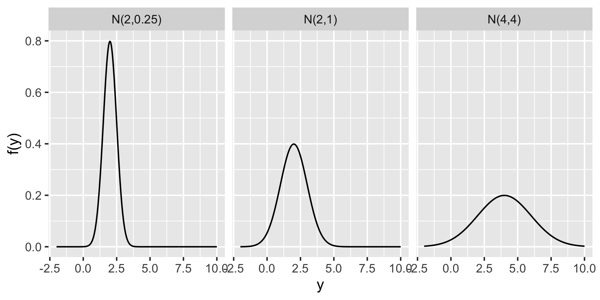
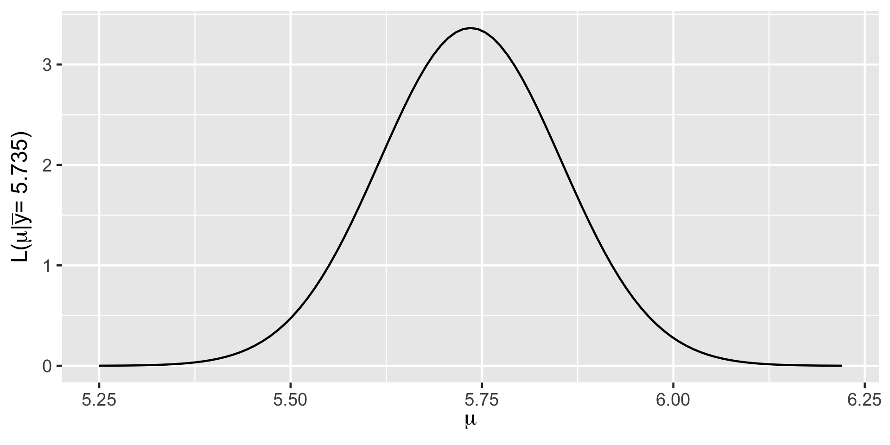

The Normal-Normal Model
The notes for this lecture are derived from Chapter 5 of the Bayes Rules! book
Data Context
Among all people who have a history of concussions, we are interested in \(\mu\) the average volume (in cubic centimeters) of a specific part of the brain: the hippocampus.
Let \((Y_1,Y_2,\ldots,Y_{25})\) denote the hippocampal volumes for volumes for the \(n = 25\) study subjects who played collegiate American football and who have been diagnosed with concussions.
Prior
According to Wikipedia, among the general population of human adults, both halves of the hippocampus have a volume between 3.0 and 3.5 cubic centimeters.
We’ll assume that the mean hippocampal volume among people with a history of concussions, \(\mu\) is also somewhere between 6 and 7 \(cm^3\) with an average of 6.5.
The Normal model
Let \(Y\) be a random variable which can take any value between \(-\infty\) and \(\infty\), ie. \(Y \in (-\infty,\infty)\). Then the variability in \(Y\) might be well represented by a Normal model with mean parameter \(\mu \in (-\infty, \infty)\) and standard deviation parameter \(\sigma > 0\):
\[Y \sim N(\mu, \sigma^2)\]
The Normal model is specified by continuous pdf
\[\begin{equation} f(y) = \frac{1}{\sqrt{2\pi\sigma^2}} \exp\bigg[{-\frac{(y-\mu)^2}{2\sigma^2}}\bigg] \;\; \text{ for } y \in (-\infty,\infty) \end{equation}\]
Trends and variability of the Normal model
\[\begin{split} E(Y) & = \text{ Mode}(Y) = \mu \\ \text{Var}(Y) & = \sigma^2 \\ \end{split}\]
Further, \(\sigma\) provides a sense of scale for \(Y\). Roughly 95% of \(Y\) values will be within 2 standard deviations of \(\mu\):
\[\begin{equation} \mu \pm 2\sigma \; . \end{equation}\]
Normal models
Normal Likelihood
\[L(\mu |\vec{y})= \prod_{i=1}^{n}L(\mu | y_i) = \prod_{i=1}^{n}\frac{1}{\sqrt{2\pi\sigma^2}} \exp\bigg[{-\frac{(y_i-\mu)^2}{2\sigma^2}}\bigg].\]
Simplifying this up to a proportionality constant
\[L(\mu |\vec{y}) \propto \prod_{i=1}^{n} \exp\bigg[{-\frac{(y_i-\mu)^2}{2\sigma^2}}\bigg] = \exp\bigg[{-\frac{\sum_{i=1}^n (y_i-\mu)^2}{2\sigma^2}}\bigg] \; .\]
\[\begin{equation} L(\mu | \vec{y}) \propto \exp\bigg[{-\frac{(\bar{y}-\mu)^2}{2\sigma^2/n}}\bigg] \;\;\;\; \text{ for } \; \mu \in (-\infty, \infty). \end{equation}\]
\[L(\mu | \vec{y}) \propto \exp\bigg[{-\frac{(5.735-\mu)^2}{2(0.593^2/25)}}\bigg] \;\;\;\; \text{ for } \; \mu \in (-\infty, \infty),\]
Normal prior
\[\mu \sim N(\theta, \tau^2) \; , \]
with prior pdf
\[\begin{equation} f(\mu) = \frac{1}{\sqrt{2\pi\tau^2}} \exp\bigg[{-\frac{(\mu - \theta)^2}{2\tau^2}}\bigg] \;\; \text{ for } \mu \in (-\infty,\infty) \; . \end{equation}\]
\[\mu \sim N(6.5, 0.4^2) \;.\]
The Normal-Normal Bayesian model
Let \(\mu \in (-\infty,\infty)\) be an unknown mean parameter and \((Y_1,Y_2,\ldots,Y_n)\) be an independent \(N(\mu,\sigma^2)\) sample where \(\sigma\) is assumed to be known. The Normal-Normal Bayesian model complements the Normal structure of the data with a Normal prior on \(\mu\):
\[\begin{split} Y_i | \mu & \stackrel{ind}{\sim} N(\mu, \sigma^2) \\ \mu & \sim N(\theta, \tau^2) \\ \end{split}\]
Upon observing data \(\vec{y} = (y_1,y_2,\ldots,y_n)\), the posterior model of \(\mu\) is also a Normal with updated parameters:
\[\begin{equation} \mu|\vec{y} \; \sim \; N\bigg(\frac{\theta\sigma^2/n + \bar{y}\tau^2}{\tau^2+\sigma^2/n}, \; \frac{\tau^2\sigma^2/n}{\tau^2+\sigma^2/n}\bigg) \; . \end{equation}\]
Data
- our Normal prior model of \(\mu\) had mean \(\theta = 6.5\) and standard deviation \(\tau = 0.4\);
- our \(n = 25\) sample subjects had a sample mean volume \(\bar{y}=5.735\);
- we will assume a known standard deviation among individual hippocampal volumes of \(\sigma = 0.5\).
The posterior model of \(\mu\) is:
\[\mu | \vec{y} \; \sim \; N\bigg(6.5\cdot\frac{0.5^2}{25\cdot0.4^2+0.5^2} + 5.735\cdot\frac{25\cdot 0.4^2}{25 \cdot 0.4^2+0.5^2}, \;\] \[\frac{0.4^2\cdot0.5^2}{25\cdot0.4^2+0.5^2}\bigg).\]
or, further simplified,
\[\mu | \vec{y} \; \sim \; N\bigg(5.78, 0.009^2 \bigg)\]
Critiques of conjugate family models
A conjugate prior model isn’t always flexible enough to fit your prior understanding. For example, a Normal model is always unimodal and symmetric around the mean \(\mu\). So if your prior understanding is not symmetric or is not unimodal, then the Normal prior might not be the best tool for the job.
Conjugate family models do not always allow you to have an entirely flat prior. While we can tune a flat Beta prior by setting \(\alpha = \beta = 1\), neither the Normal nor Gamma priors (or any proper models with infinite support) can be tuned to be totally flat. The best we can do is tune the priors to have very high variance, so that they’re almost flat.
Exercises
5.8
5.11
5.13